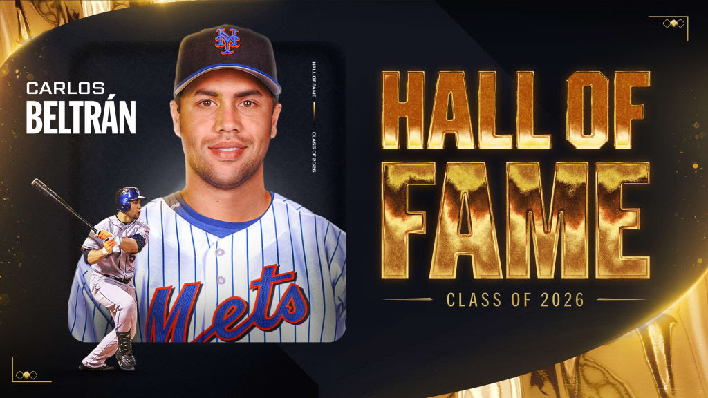
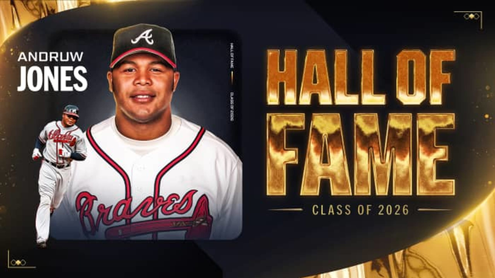

El mayor honor personal al que puede aspirar un jugador de béisbol es sin dudas ver una placa con su nombre en el Salón de la Fama de Cooperstown. Quizás muchos no lo expresen abiertamente, pero es evidente que esa es una ambiciosa meta que surge apenas se pone los pies en un diamante.
Existen tres tipos de peloteros: los que pisan un terreno de Major League Baseball esporádicamente, los que son regulares y los que habitan en el olimpo de los inmortales. Y eso justamente acaban de hacer el boricua Carlos Beltrán y el curazoleño Andrew Jones, quienes fueron oficialmente exaltados al Salón de la Fama tras quedar develados los resultados de la votación para la clase 2026.
Beltrán y Jones fueron los únicos que alcanzaron el apoyo del 75% en la boleta de la Asociación de Cronistas de Béisbol de Norteamérica y se unirán a Jeff Kent, elegido en la boleta del Comité de Veteranos, como los tres miembros de este año.
Carlos Beltrán

Beltrán se convierte en el 6to puertorriqueño en la inmortalidad.Se convierte en el 6to pelotero puertorriqueño y el 20mo latino en ingresar a Cooperstown desde que su compatriota Roberto Clemente abriera la lista para los nacidos en esta parte del mapa.
Tuvo una extensa carrera de 20 años en los que vistió los colores de Reales, Astros, Mets, Gigantes, Cardenales, Yankees y Rangers. Reconocido como uno de los mejores bateadores ambidiestros de la historia, es uno de los cinco miembros del exclusivo club con 500 dobles, 400 jonrones y 300 bases robadas.
Andrew Jones

Jones es considerado por métricas avanzadas como el mejor jardinero defensivo de la historia.Sin dudas recordado como uno de los mejores jardineros centrales de toda la historia, Andrew Jones se convirtió este miércoles en el primer curazoleño en entrar al Salón de la Fama. Sus 10 Guantes de Oro fueron su principal credencial, sumado a sus más de 400 jonrones.
Según las nuevas métricas, Andrew Jones es el mejor jardinero de todos los tiempos; su WAR defensivo de 24.4 es la mayor cifra de cualquier patrullero en la historia de las Grandes Ligas.
Latinos en el Salón de la Fama
Cuba
Martín Dihigo, José Mendéz, Orestes “Minnie” Miñoso, Tony Oliva, Tany Pérez, Cristóbal Torriente.
Puerto Rico
Roberto Alomar, Carlos Beltrán, Orlando “Peruchín” Cepeda, Roberto Clemente, Edgar Martínez, Iván Rodríguez.
República Dominicana
Adrián Beltré, Vladimir Guerrero, Juan Marichal, Pedro Martínez, David Ortiz.
Panamá
Rod Carew, Mariano Rivera.
Venezuela
Luis Aparicio.